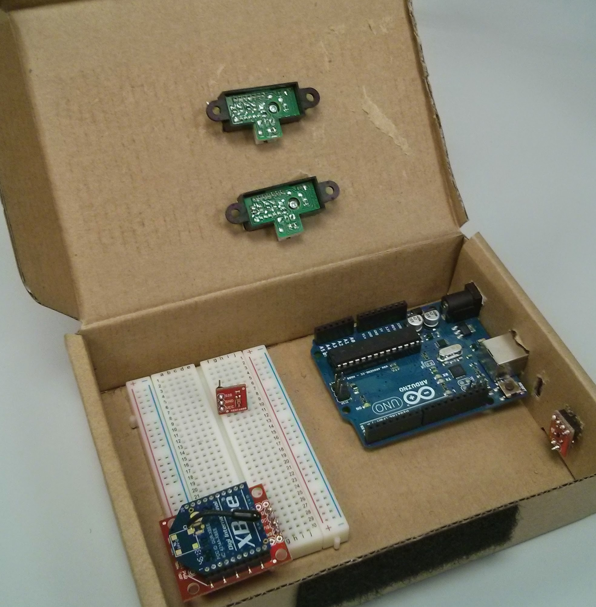
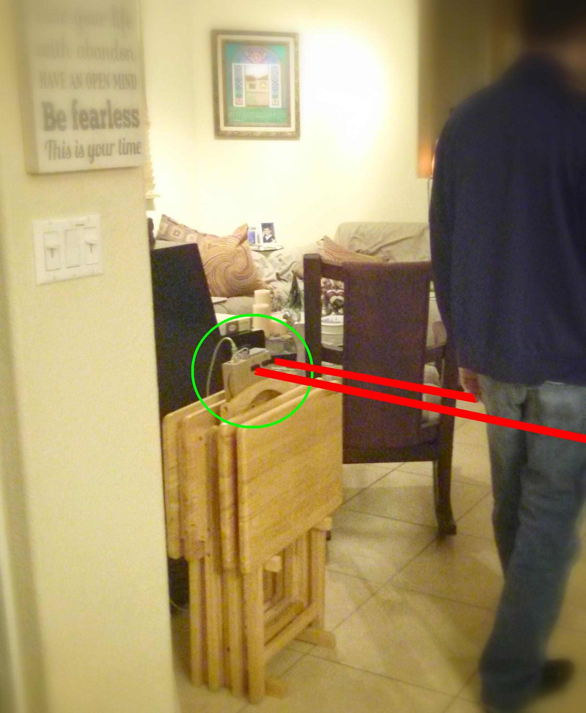
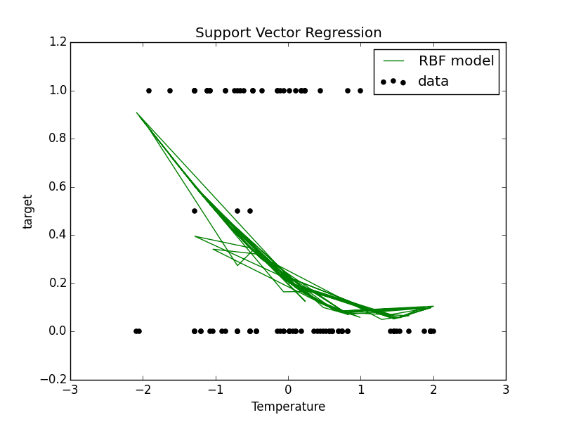
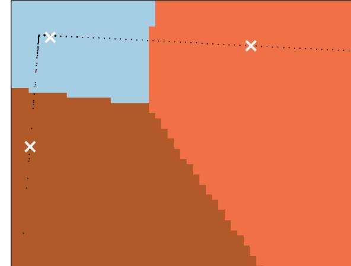
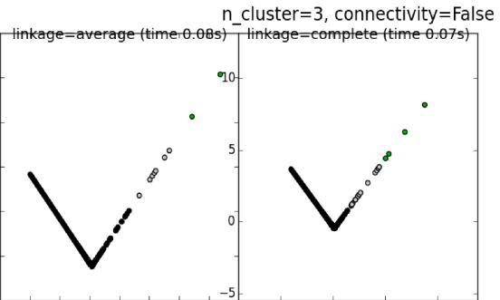

Abstract
The top consumers of energy in the United States are buildings. There are many factors that lead to energy expenditure in buildings such as climate change, indoor environment quality, and occupant behavior. In this project, we will focus on the latter. Occupant behaviors play a key role in generating energy expenditure in buildings and by decoding occupant behaviors, we can identify energy waste and furthermore, make suggestions and enforce policies that will curtail energy waste.Our previous work in this project proposed an information space approach for automated detection and proactive monitoring of energy waste due to occupant behaviors. Motion Planning strategies were used to capture minimal information necessary to detect wasteful states of occupants utilizing a sensor network consisting of inexpensive distance, light, temperature sensors. In this paper we focus on Machine learning algorithms that be applied to our collected data in order to detect energy wasteful states and pro-actively eliminate energy expenditure by calculating a score associated with occupants in different regions. This score will be used to suggest policies to users or facility managers to help reduce energy costs related to occupancy behaviors. We also apply clustering algorithms to correct noisy sensor data. We finally discuss a simple ranking algorithm that can be used to detect wasteful trajectories caused by energy-inefficient users.
Experimental Setup
Hardware nodes were placed throughout a single-story residential home. Paired IR beams on the nodes allowed us to detect the crossing direction of an occupant moving from one region to another region. We also collected data related to lighting and temperature information using the sensors described in the previous sections.

The figure below shows the setup of the nodes throughout the home. Each blue box represents a node, which is placed at doorways and crossings between different rooms. The house is divided into 5 regions ($R_1$-$R_5$) with 6 nodes creating the partitions. The front entrance/exit of the house is monitored by node 1 and crossing past this node leads into $R_1$- the living room. Node 2 leads into $R_2$ which contains a bathroom, bedroom and hallway. The hallway from $R_2$ leads into $R_3$ which is a home office. At another side of $R_1$ is node 4 which leads into $R_4$, a kitchen/dining room. It is bordered by node 5 which leads into $R_5$, a multipurpose room in the back of the house. The last node is $R_6$, which leads to the back entrance/exit of the house.

Machine Learning Application: Support Vector Regression
Once noisy data was filtered out, we sought to find a more precise scoring criterion for the efficiency of a given room. We decided to use Support Vector Regression (SVR), a support vector machine that does regression instead of classification, to predict the efficiency value. Some of the advantages of support vector machines are the effectiveness in high dimensional spaces and the ability to apply different kernel functions for the decision function. The specification of a kernel function is particularly useful as we continue optimizing the system.

Other Machine Learning Applications: K-means and HAC
We use two centroid-based clustering algorithms: K-Means and Hierarchical Agglomerative clustering. After several trials, we were most successful using the two additional features mentioned in the previous section; namely, time difference since last reading from that node and number of times the node produced a signal in the past minute. We began by using a K-Means clustering on our data. Yet, we began to realize that since we had so much noisy data, the means were heavily weighted toward the noisy data. Because of this, we changed our approach slightly and used Hierarchical Agglomerative Clustering (HAC). Since HAC begins by assuming that each data point is independent and forms clusters from all these independent points, we believed that we may see more appropriate clusters.


Authors
Triana Carmenate and Mike Novo
Contact and Questions
tcarm002@fiu.edu
mnovo006@fiu.edu